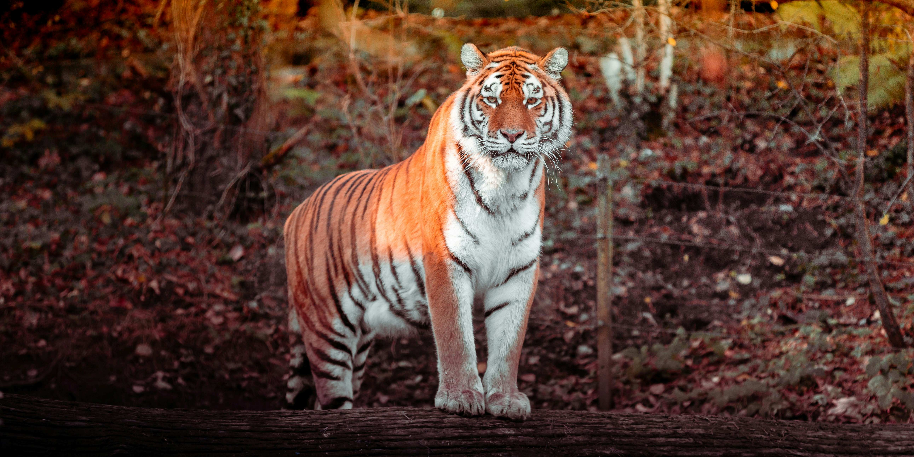
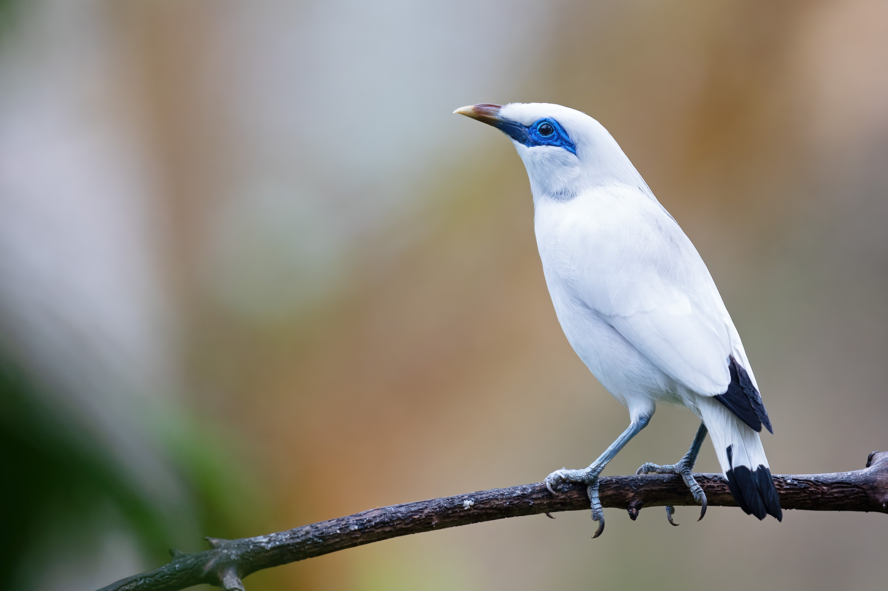
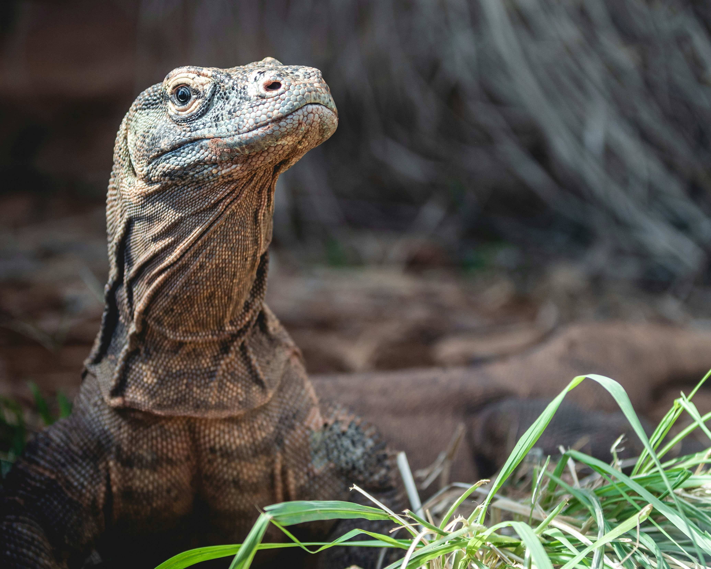
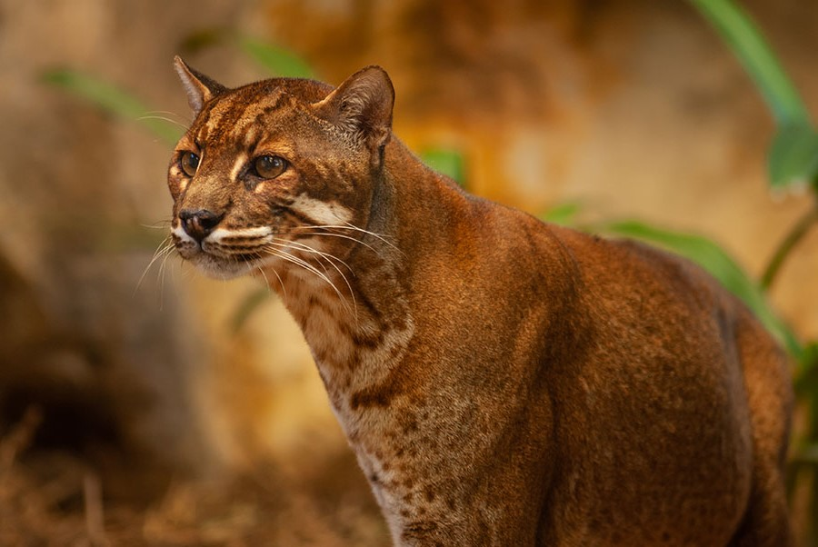
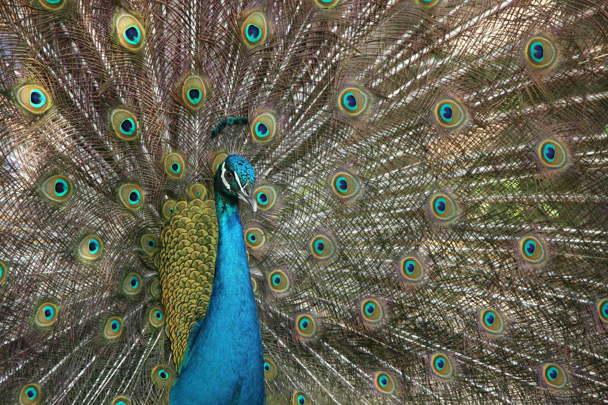
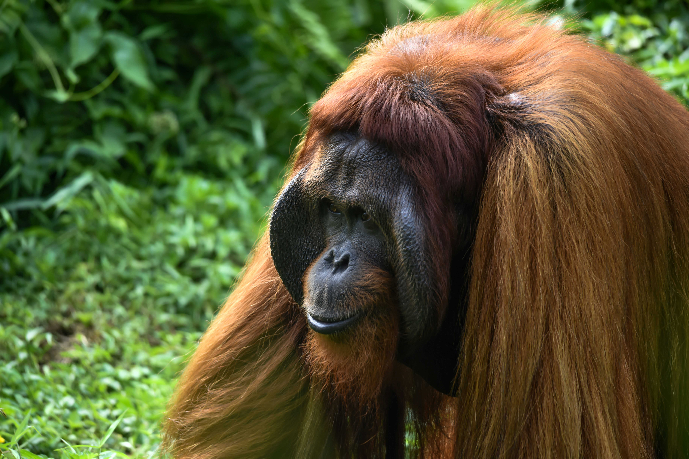
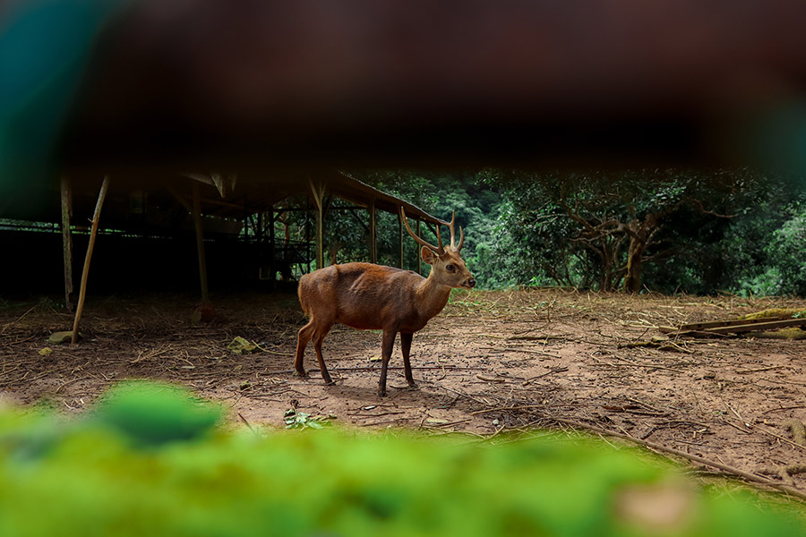

Badak Jawa
Badak jawa (Rhinoceros sondaicus) juga disebut badak sunda atau
badak sumbu atau badak bercula satu kecil, adalah anggota famili
Rhinocerotidae yang sangat langka dan merupakan salah satu dari
lima spesies badak yang masih hidup. Badak ini memiliki genus yang
sama dengan badak india dan memilki kulit yang menyerupai baju
zirah dengan pola mosaik. Namun, ukurannya lebih kecil dari badak
india, lebih mirip dengan badak hitam dari genus Diceros, dengan
panjang 3,1–3,2 m dan tinggi 1,4–1,7 m. Cula badak ini biasanya
kurang dari 25 cm dan lebih kecil dari cula spesies badak lainnya.
Hanya badak jantan dewasa yang memiliki cula, sedangkan bada
betina tidak memiliki cula sama sekali.
Read More...

Cendrawasih
Cenderawasih kuning-kecil (Paradisaea minor) adalah burung
Cenderawasih berukuran sedang dengan panjang sekitar 32 cm, dari
genus Paradisaea. Burung ini berwarna kuning dan coklat, berparuh
abu-abu kebiruan dan mempunyai iris mata berwarna kuning. Burung
jantan dewasa memiliki bulu di sekitar leher berwarna hijau zamrud
mengkilap, pada bagian sisi perut terdapat bulu-bulu hiasan yang
panjang berwarna dasar kuning dan putih pada bagian luarnya. Di
ekornya terdapat dua buah tali ekor berwarna hitam. Burung betina
berukuran lebih kecil dari burung jantan, memiliki kepala berwarna
coklat tua, dada berwarna putih dan tanpa dihiasi bulu-bulu
hiasan.
Read More...

Dugong
Lembu laut (atau manatee, famili Trichechidae, genus Trichechus)
adalah mamalia air besar dari famili Trichechidae. Berbeda dengan
Dugongidae dari segi bentuk tengkorak dan bentuk ekor. Ekor lembu
laut berbentuk pendayung, sementara ekor Dugong bercabang. Lembu
laut adalah herbivora, melewatkan sebagian besar waktunya merumput
di air dangkal.
Read More...

Harimau Sumatera
Harimau sumatra adalah populasi Panthera tigris sondaica yang
mendiami pulau Sumatra, Indonesia dan satu-satunya anggota
subspesies harimau sunda yang masih bertahan hidup hingga saat
ini. Ia termasuk dalam klasifikasi satwa kritis yang terancam
punah (critically endangered) dalam daftar merah spesies terancam
yang dirilis Lembaga Konservasi Dunia IUCN. Populasi liar
diperkirakan antara 400-500 ekor, terutama hidup di Pegunungan
Bukit Barisan jama sejarah taman-taman nasional di Sumatra jaman
pra-sejarah. Uji genetik mutakhir telah mengungkapkan tanda-tanda
genetik yang unik, yang menandakan bahwa subspesies ini mungkin
berkembang menjadi spesies terpisah, bila berhasil lestari.
Read More...

Jalak Bali
Jalak Bali (Leucopsar rothschildi) adalah sejenis burung pengicau
berukuran sedang, dengan panjang lebih kurang 25 cm, dari suku
Sturnidae. Ia turut dikenali sebagai Curik Ketimbang Jalak. Jalak
Bali hanya ditemukan di hutan bagian barat Pulau Bali dan
merupakan hewan endemik Indonesia. Burung ini juga merupakan
satu-satunya spesies endemik Bali dan pada tahun 1991 dinobatkan
sebagai lambang fauna Provinsi Bali.
Read More...

Komodo
Komodo atau lengkapnya biawak komodo (Varanus komodoensis), adalah
spesies biawak besar yang terdapat di Pulau Komodo, Rinca, Flores,
Gili Motang, dan Gili Dasami di Provinsi Nusa Tenggara Timur,
Indonesia. Hewan ini oleh penduduk asli pulau Komodo juga disebut
dengan nama setempat ora.[3] Nama lain dari komodo adalah buaya
darat, walaupun komodo bukanlah spesies buaya.
Read More...

Kucing Merah Kalimantan
Kucing merah (Pardofelis badia atau Catopuma badia), juga dikenal
sebagai kucing kalimantan, kucing merah kalimantan, atau kucing
batu kalimantan, adalah kucing liar endemik pulau Kalimantan yang
lebih jarang ditemui dibandingkan dengan spesies kucing lain yang
simpatrik, berdasarkan pada kurangnya historis serta catatan
terakhir. Pada tahun 2002, Uni Internasional untuk Konservasi Alam
mengklasifikasikan spesies hutan ini sebagai terancam punah karena
penurunan populasi yang diperkirakan lebih dari 20% pada tahun
2020 karena hilangnya habitat. Pada tahun 2007, jumlah populasi
efektif diperkirakan kurang dari 2.500 ekor kucing dewasa.
Read More...

Merak
Burung Merak atau Peacock dikagumi karena memiliki bulu warna
warni yang mengembang dengan indahnya, habitat burung ini masuk
dalam kelompok unggas dengan klasifikasi Genus Pavo dan Afropavo.
Burung ini juga masih satu keluarga dengan ayam hutan atau
Pheasant dengan nama latin Phasianidae.Jenis kelamin yang dimiliki
terdiri dari jantan dan betina. Jenis perkawinan antara keduanya
adalah poligami. Burung ini lebih banyak hidup di darat walaupun
tetap memiliki kemampuan untuk terbang dalam situasi tertentu.
Selain sebagai simbol dari keindahan, bulunya juga memiliki fungsi
sebagai pertahanan diri dari serangan lawan dengan cara
mengembangkan sayapnya.
Read More...

Orang Utan Kalimantan
Orangutan Kalimantan, Pongo pygmaeus, adalah spesies orangutan
asli pulau Kalimantan. Bersama dengan orangutan Sumatra yang lebih
kecil, orangutan Kalimantan masuk kedalam genus pongo yang dapat
ditemui di Asia. Orangutan Kalimantan memiliki lama waktu hidup
selama 35 sampai 40 tahun di alam liar, sedangkan di penangkaran
dapat mencapai usia 60 tahun.
Read More...

Rusa Bawean
Rusa bawean (Axis kuhlii) adalah sejenis rusa yang saat ini hanya
ditemukan di Pulau Bawean di tengah Laut Jawa, Secara
administratif pulau ini termasuk dalam Kabupaten Gresik, Provinsi
Jawa Timur, Indonesia. Spesies ini tergolong langka dan
diklasifikasikan sebagai "terancam punah" oleh Uni Internasional
untuk Konservasi Alam. Populasinya diperkirakan hanya tersisa
sekitar 300 ekor di alam bebas. Rusa Bawean hidup dalam kelompok
kecil yang biasanya terdiri atas rusa betina dengan anaknya atau
jantan yang mengikuti betina untuk kawin. Mereka tergolong hewan
nokturnal atau aktif mencari makan di malam hari.
Read More...